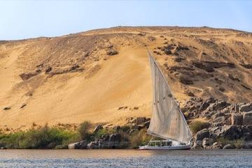
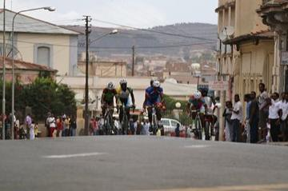
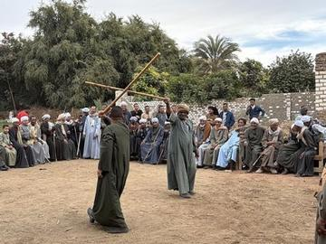
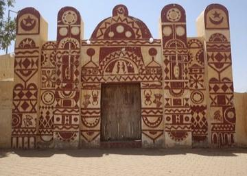
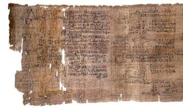
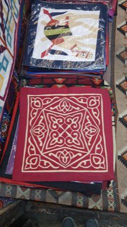

Home / Age of Contact and Craft / Africa: Nile and the Horn
Encyclopedia ID 692
Seega
Seega · Seejeh · Seeza · Siga · Sidjah
Placement then movement game on a small grid; capture by flanking.
Heritage note
Part of the living heritage of Egypt.
Origins
Usually placed in the era of Age of Contact and Craft (about 1500 to 1800), although its exact origins are uncertain, within the cultural world of Africa: Nile and the Horn.
Play it
Sources
Related entries

Nile Felucca Sailing
Egypt · Racing
Asmara highland road race
Eritrea · Racing
Tahtib
Egypt · Dances
Nubian house painting
Egypt · Crafts and making
Egyptian Fractions and Doubling
Egypt · Puzzles and mind games
Khayamiya Tentmaker Applique
Egypt · Crafts and making